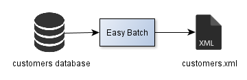

In this tutorial, the goal is to extract customers data from a database, transform it and load it into an output XML file:

Easy Batch provides built-in record mappers for flat file, xml and database records, but these mappers actually maps data in a one-to-one fashion: Each field in the input record is mapped to a field of the domain object.
This is actually fine when your input record can be mapped with this approach to your domain object. But how to do if your domain model contains multiple object types?
In this tutorial, you will learn how to use custom record mapping strategy to map input data to a non-trivial domain object.
Consider the following database table containing customer data:
| id | firstName | lastName | birthDate | phone | street | zipCode | city | country | |
|---|---|---|---|---|---|---|---|---|---|
| 1 | foo | bar | 1990-12-13 | 0123456789 | foo@bar.org | street1 | zipCode1 | london | uk |
| 2 | bar | foo | 2000-12-13 | 9876543210 | bar@foo.org | street2 | zipCode2 | new york | usa |
We would like to map each database record to the following Customer bean:
@XmlRootElement
public class Customer {
private int id;
private String firstName;
private String lastName;
private Date birthDate;
private Contact contact;
private Address address;
//Getters and setters omitted
}public class Address {
private String street;
private String zipCode;
private String city;
private String country;
//Getters and setters omitted
}
public class Contact {
private String email;
private String phone;
//Getters and setters omitted
}The goal of the tutorial is to generate an XML file containing customer data in the following format:
<customer>
<id>1</id>
<firstName>foo</firstName>
<lastName>bar</lastName>
<birthDate>1990-12-13T00:00:00+01:00</birthDate>
<contact>
<email>foo@bar.org</email>
<phone>0123456789</phone>
</contact>
<address>
<street>street1</street>
<zipCode>zipCode1</zipCode>
<city>london</city>
<country>uk</country>
</address>
</customer>So let's get started!
Easy Batch allows you to define custom mapping strategy through the RecordMapper interface.
To map customer table records to instances of our Customer bean, we will use the following implementation:
public class CustomerMapper implements RecordMapper<Customer> {
public Customer mapRecord(final Record record) throws Exception {
JdbcRecord jdbcRecord = (JdbcRecord) record;
ResultSet resultSet = jdbcRecord.getRawContent();
Customer customer = new Customer();
customer.setId(resultSet.getInt("id"));
customer.setFirstName(resultSet.getString("firstName"));
customer.setLastName(resultSet.getString("lastName"));
customer.setBirthDate(resultSet.getDate("birthDate"));
Contact contact = new Contact();
contact.setPhone(resultSet.getString("phone"));
contact.setEmail(resultSet.getString("email"));
Address address = new Address();
address.setStreet(resultSet.getString("street"));
address.setZipCode(resultSet.getString("zipCode"));
address.setCity(resultSet.getString("city"));
address.setCountry(resultSet.getString("country"));
customer.setContact(contact);
customer.setAddress(address);
return customer;
}
}In this tutorial, data is extracted from a database, so we will use the JdbcRecordReader to read data from the customer table.
This reader returns records of type JdbcRecord which has a raw content as a java.sql.ResultSet object containing the current record data.
In our record mapper implementation above, first we get the JdbcRecord raw content and then map record data to our Customer bean.
Heads up! Note that we do not iterate over the result set, this is done by Easy Batch.
Now, to generate XML record for each customer, we will use the following RecordProcessor implementation which uses JAXB API:
public class CustomerProcessor extends AbstractRecordProcessor<Customer> {
/**
* The Jaxb marshaller to write customer xml data.
*/
private Marshaller jaxbMarshaller;
/**
* Create a CustomerProcessor.
* @throws Exception if a problem occurs during JAXB marshaller initialization
*/
public CustomerProcessor() throws Exception {
JAXBContext jaxbContext = JAXBContext.newInstance(Customer.class);
jaxbMarshaller = jaxbContext.createMarshaller();
jaxbMarshaller.setProperty(Marshaller.JAXB_FORMATTED_OUTPUT, true);
}
@Override
public void processRecord(final Customer customer) throws Exception {
jaxbMarshaller.marshal(customer, System.out);
}
}To keep the tutorial simple, we will write XML data to the standard output. This can be easily changed to write XML data to a file.
Finally, let's configure an Easy Batch engine to:
Customer bean using our custom record mapperCustomerProcessorThe following listing provides this configuration:
public class Launcher {
public static void main(String[] args) throws Exception {
// create an embedded hsqldb in-memory database
Connection connection = DriverManager.getConnection("jdbc:hsqldb:mem", "sa", "");
populateEmbeddedDB(connection);
// Build an easy batch engine
EasyBatchEngine easyBatchEngine = new EasyBatchEngineBuilder()
.registerRecordReader(new JdbcRecordReader(connection, "select * from customer"))
.registerRecordMapper(new CustomerMapper())
.registerRecordProcessor(new CustomerProcessor())
.build();
// Run easy batch engine and get execution report
EasyBatchReport easyBatchReport = easyBatchEngine.call();
// Print the batch report
System.out.println(easyBatchReport);
}
}In memory database setup details are not shown here.
That's all, we can now run the batch and see the results.
The complete source code of this tutorial is available here.
To run the tutorial with maven, launch the following command in the easybatch-tutorials directory :
mvn exec:java -PrunCustomersTutorial
At the end of execution, you should see the following output in the console:
INFO: Initializing easy batch engine
INFO: Data source: Connection URL: jdbc:hsqldb:mem | Query string: select * from customer
INFO: Strict mode: false
INFO: Total records = 2
INFO: easy batch engine is running...
<customer>
<address>
<city>london</city>
<country>uk</country>
<street>street1</street>
<zipCode>zipCode1</zipCode>
</address>
<birthDate>1990-12-13T00:00:00+01:00</birthDate>
<contact>
<email>foo@bar.org</email>
<phone>0123456789</phone>
</contact>
<firstName>foo</firstName>
<lastName>bar</lastName>
<id>1</id>
</customer>
<customer>
<address>
<city>new york</city>
<country>usa</country>
<street>street2</street>
<zipCode>zipCode2</zipCode>
</address>
<birthDate>2000-12-13T00:00:00+01:00</birthDate>
<contact>
<email>bar@foo.org</email>
<phone>9876543210</phone>
</contact>
<firstName>bar</firstName>
<lastName>foo</lastName>
<id>2</id>
</customer>
INFO: Shutting down easy batch engine
Easy Batch Report:
Start time = 2014-01-19 10:52:35
End time = 2014-01-19 10:52:35
Batch duration = 0s
Data source = Connection URL: jdbc:hsqldb:mem | Query string: select * from customer
Total records = 2
Filtered records = 0 (0%)
Ignored records = 0 (0%)
Rejected records = 0 (0%)
Error records = 0 (0%)
Success records = 2 (100%)
Average record processing time = 0.0sAs you can see, Easy Batch extracted data from the customers database, transformed it to our domain model and generated an XML output as required.
In this tutorial, we have seen how to provide a custom mapping strategy with Easy Batch. This tutorial is also a complete use case of how to use Easy Batch to do ETL operations.
Using Easy Batch, all we have done is :
Easy Batch handled all the plumbing code of handling database connection, reading records and iterating over the JDBC result set.
The following table summarizes what we have done and what Easy Batch has done for us :
| Task | You | Easy Batch |
|---|---|---|
| Provide configuration meta data | ||
| Provide record mapping logic | ||
| Provide record processing logic | ||
| Handle I/O for database connection | ||
| Iterating over the JDBC result set | ||
| Apply business processing logic | ||
| Generate a batch execution report |